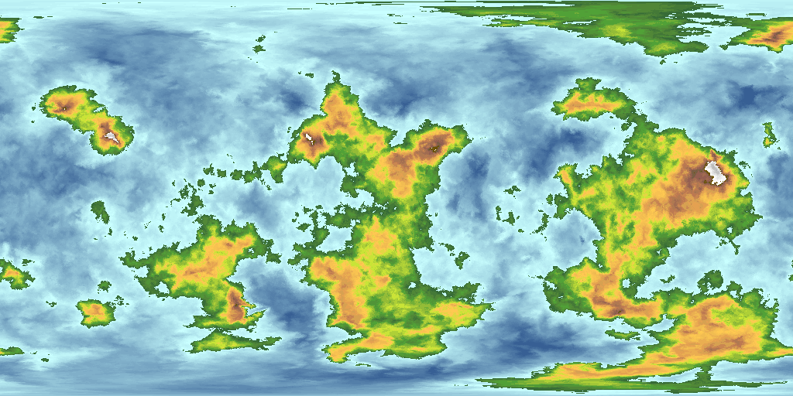

010203040506070809101112131415161718192021222324
o;.;-;*-;--;*o--o*;;-;** ;-:.::::::::;;;.;O**--;O -::,,::;-::::::..:::-::: ,-O-:,:::.,,::-:::::::.. :::@-::-:O@O@@,:,,:-:::, ,,,,:;--*;;*o-.-::,*.-:, ,::-:--:,---*;.::o*;O.:: :::--;*o--;o*--::**Oo--: o-::-*o-,*OO-;-:;:o**-;; ::-o:-;O,,oO@,;,-*OOo*o, .-::::*-*.o*;.:,..;;@oo* ::::::;-;:...,:.-@o@;*.o